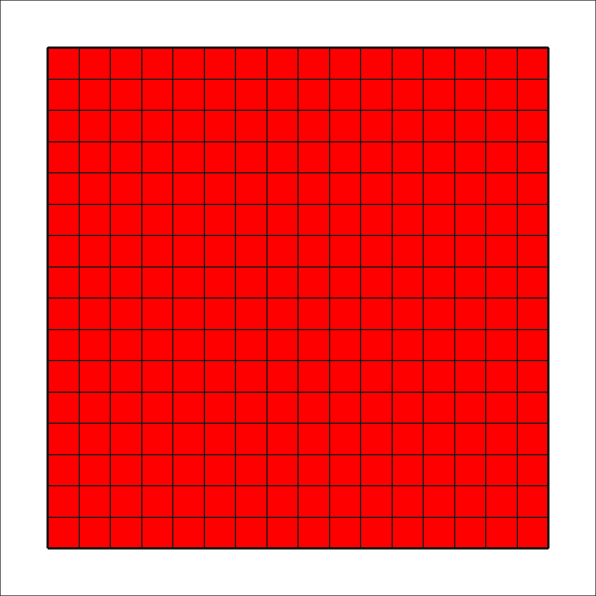

Output of the first grid
¶
All
lines
in
square
are:
744
Active
lines
in
square
are:
544

Lab_1
Navigation
Building the square
STRUCTURE OF CODE
Building the donut
Output of the first grid
Output of the second grid
Related Topics
Documentation overview
Previous:
Building the donut
Next:
Output of the second grid
Quick search